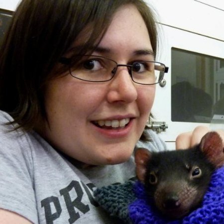

Speaker Profile
Katie is a senior systems engineer, working to automate all the things. She has a history of enterprise software development and Windows system administration, but has been successfully converted to the ways of the penguin in recent years.When she's not changing the world, she enjoys making tapestries, cooking, and yelling at JavaScript and its attempt at global variables.
See a list of talks
Aggregate Profiles
Human BioHere's where I can actually put down a bit about myself, my interests, hobbies, etc.I actually have no idea what to put here. I know, Memory Lane! I've always enjoyed making technology work for me. As a young child, I remember being absolutely chuffed that I could make a computer talk. There were a few computers in the house, but only one had a graphical user interface. I started teaching about technology when I had to show my mother how to undo the custom theme changes I had made. I have a degree in Information Technology, but a lot of what I did at university was the application of technology in other disiplines: using wikis as a documentation tool to assist in management, the science and psychology behind web marketing, how animation works. I started my professional software development career converting the human process of data collection via spreadsheets into basic web-based data collection forms. The tech stack for this was... not something I want to use in the future. After a few years of that, I was given the opportunity to do system administration for a managed hosting provider, tending to their Windows fleet. There was a lot of repetition and manual work involved, so between support tickets, I started automating things. I made windows versions of some of the apps they were using on the Linux side: wail2ban (based on fail2ban) and twingle (based on tingle). Automating all the things got a bit of attention, and I was moved from the support team into the engineering department. I started working with Python, Ruby, Haskell, web application development, and more Linux than I could shake a stick at. During this time, I was fortunate enough to go to OSDC2013. I saw an amazing, humourous and interesting talk about using Cython for distributed-multiprocess steganographic md5sum-collision generation[1]. On the final day of the conference at the hotel bar, I was speaking with a random person, and I mentioned how this conference had been awesome, citing the Cython talk, and how I thought I could possibly speak at the next one. Little did I know that I was actually speaking with the person that started OSDC itself. Eep. That conversation was a catalyst for a life-changing experience. Since then, I have spoken at a number of local meetups, national events, and international conferences. I have met some absolutely amazing people, done some amazing things, and my life has been changed for the better. I've learnt so much about technology, people, and myself, that I have no idea who I would be if it were not for that one talk and that one conversation. Outside of work, I do enjoy hacking on tech. I've made a few fun little projects, and I do like getting my hands dirty with building my gaming rig, or playing with Arduino. And yes, I do actually enjoy cooking and making tapestries, and yelling at JavaScript and its attempt at global variables. [1] - video is the same talk, but given at a different conference. |  |